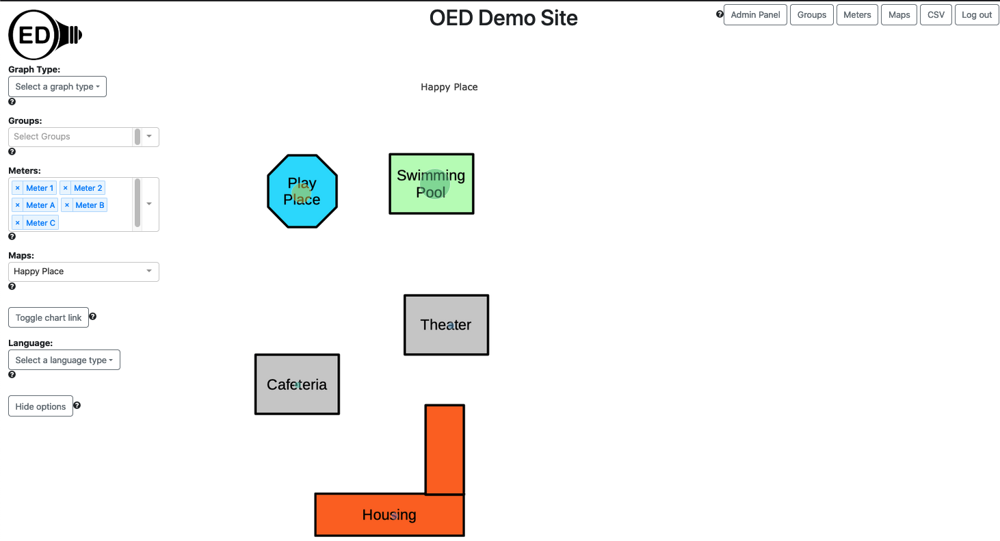
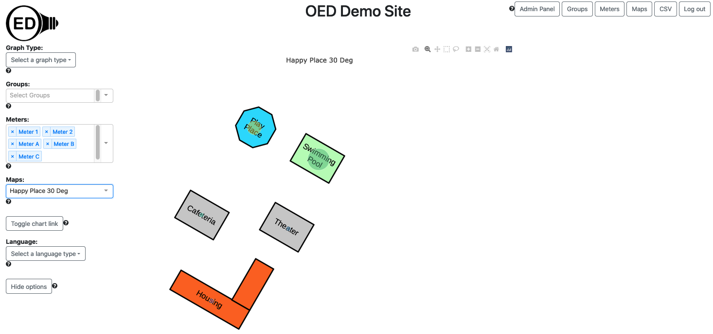

The following assumes you have loaded the test data into your development OED system. You can use other meter data if you prefer.
Please use the admin map help for information on how to load and calibrate a map. This page only describes the necessary details of the test map. You need to be logged in as an admin to complete these steps.
Use the sample Happy Place map by downloading it. This is the map you upload into OED. We will call it "Happy Place" and you can use that name in OED or some other name. The map angle is 0.0 degrees.
During the calibration step, you will use a mythical GPS coordinate system of (0-30, 0-50) which are real GPS values but not usual for a map. This large area works because we will make a perfect calibration with no error. This means the lower, left corner of the map has GPS coordinate (0, 0) and the top, right has GPS coordinate (50, 30). The Plotly grid has values of (0, 0) for lower, left and (300, 500) for the top, right. This means the coordinates are reversed for GPS (latitude, longitude) compared to the grid (x, y) and are a factor of 10 smaller. During calibration, click on three places on the map. In principle it does not matter where but I normally click in three spread out places on the map. When you do that, OED will tell you the grid coordinate you clicked on. As just explained, you need to reverse the coordinates and divide by 10. Thus, if you are told "input GPS coordinate that corresponds to the point: x: 277, y: 461 in this format -> latitude,longitude" then you enter "46.1, 27.7" for the GPS value in the box and submit. Repeat this 3 times and you should then see an error of 0% for both directions. If not, start over. If yes, then save changes to the database.
Next go to mater page to edit the meters for the desired GPS locations. These values will work where you don't input the location on map but that tells you where it will show up. You can do the same on the groups page.
You can put these on whatever meters/groups you want and can use as many as you want. If all went well, you should now see the following on the map page where you may have different meters/groups that can change the color of the circles and their size.
Sometimes you want to test a rotated map. In this case use Happy Place 30 Deg map that was rotated by 30 degrees. This does not impact the GPS coordinates but means the simple correspondence between the OED grid and GPS no longer holds. During calibration, use these points:
This will give: result: x: 3.127%, y: 0.647%. If you switch to this map then you should see the following (assuming you put in the meter locations above) with the same caveats listed for the Happy Place map.
{kind=link}
{kind=link}